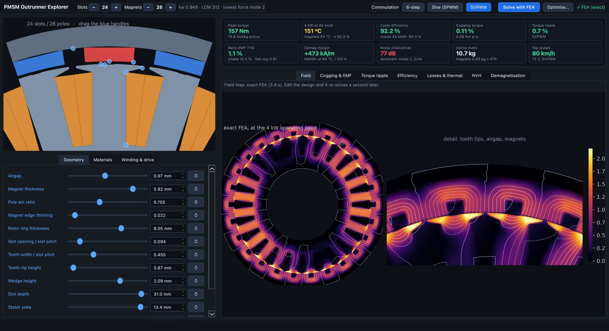
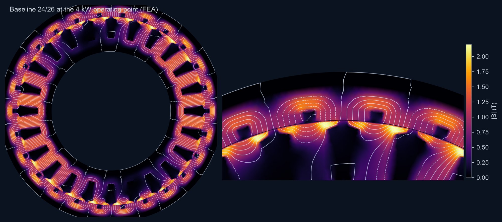
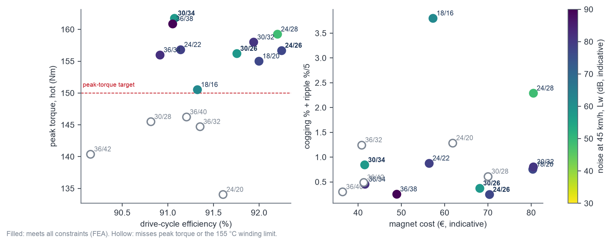
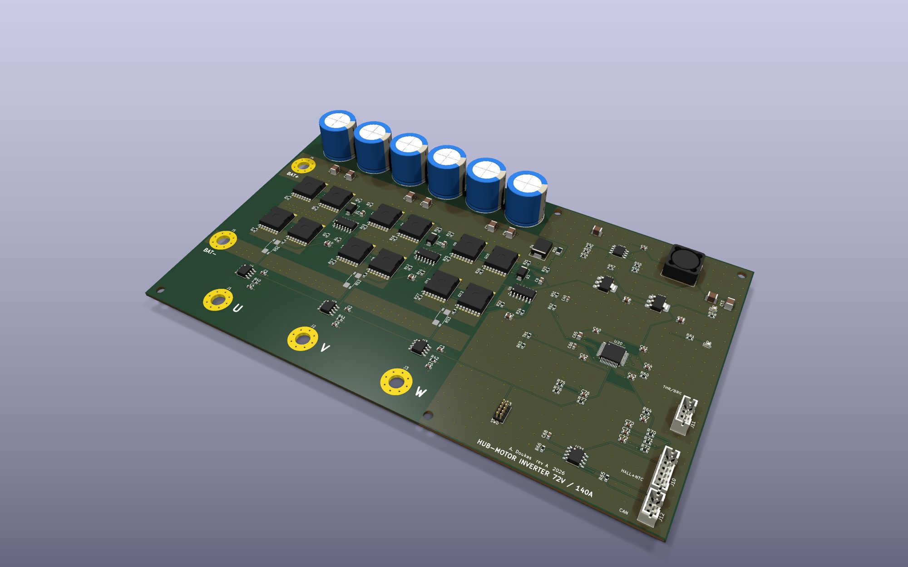
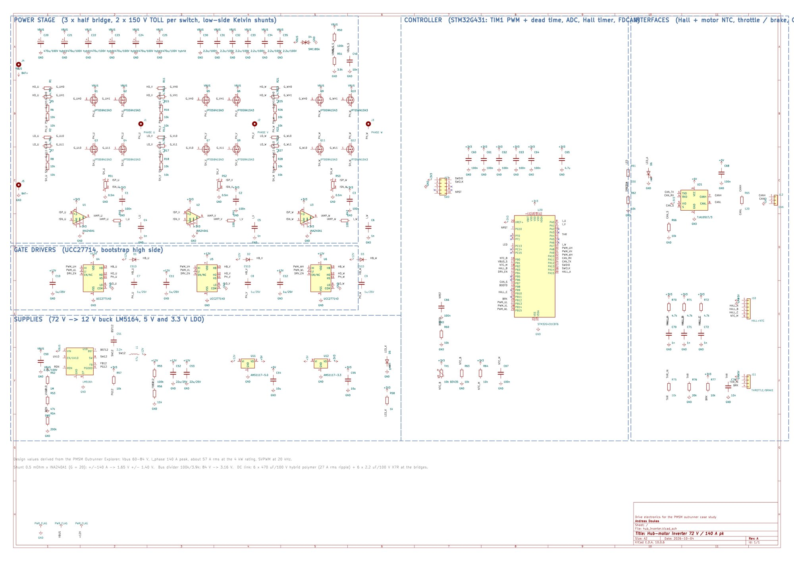

- Physics
- Nonlinear 2D finite-element magnetics with a moving band, cross-checked against the independent GetDP solver to 0.001 % on torque. Drive (6-step, SPWM, SVPWM), iron and eddy losses, a thermal network, airgap-force NVH and a demagnetisation check all run on the FEA results.
- Role of ML
- Speed only. Gaussian-process surrogates trained on 4,650 FEA designs make the sliders and the optimiser instant. Every number reported here was re-solved with the full FEA, and the app does the same with one click.
Background
The brief: a direct-drive hub motor that fits a 12" scooter rim and meets the EU moped class (45 km/h, 4 kW continuous, 72 V battery), with enough peak torque for a hill start. The open design questions were the ones every motor designer faces. Which slot/pole combination? How to shape teeth and magnets? Which magnet grade and steel? Radial magnets or a Halbach array, on steel or aluminium? And how do torque, efficiency, cogging, noise, heat and magnet cost trade against each other?
Approach
- Electromagnetics: a parametric outer-rotor geometry, meshed per design and solved with Newton–Raphson on datasheet B–H curves. Each design runs about 230 nonlinear solves, covering cogging, back-EMF, loaded torque ripple, d/q flux maps, losses, airgap forces and the worst demagnetising field.
- Drive and losses: minimum-current operating points with field weakening, for 6-step, sinusoidal PWM and SVPWM. Copper, iron (Bertotti, element by element), magnet and rotor eddy losses are evaluated over a realistic urban cycle with hills.
- Thermal and NVH: a coupled thermal network feeds magnet temperature back into Br. Radial force waves from the FEA drive a ring model of the rotor and rim.
- Interactive app: drag tooth and magnet vertices, step slots and poles ±, change materials and commutation, and every KPI updates instantly. A second after you stop editing, an exact FEA redraws the field map.

Why ML, and keeping it honest
A full FEA evaluation takes 15–45 s, too slow for a slider or an optimiser. Surrogates fix the speed. But an optimiser running on a surrogate is drawn to exactly the corners where the surrogate is too optimistic. On its own optimum, the first surrogate overstated peak torque by 8 % (median, up to 16 %).
Two changes fixed that. Analytical magnetic-loading estimates (airgap, tooth and yoke flux densities, armature field) went in as inputs, so the model sees saturation coming. And optimiser candidates were verified with FEA and fed back in for two rounds. The error at the optimum fell to 1.8 % (median, 5.9 % at the 90th percentile).

Slot/pole study
All 15 balanced slot/pole layouts (18 to 36 slots, 16 to 42 poles) were optimised with the same goals and constraints, and each winner was solved with the full FEA. 24/26 is the best all-rounder: 157 Nm peak, 92.2 % cycle efficiency, 0.7 % torque ripple. 30/34 gives the most torque (162 Nm) for the lowest magnet cost and is notably quieter. Several popular alternatives, including 36/40, could not meet the torque and 155 °C winding targets at once in this envelope.

Drive electronics
The inverter was sized from the motor results: 72 V bus, 140 A peak phase current, 27 A rms DC-link ripple. It was then drawn in KiCad: 150 V MOSFETs in pairs, bootstrap gate drivers, Kelvin shunts with current amplifiers, and an STM32G431 with Hall, throttle and CAN interfaces. Schematic and four-layer board come from one design file. The schematic passes ERC and the board passes DRC with zero violations. The bridge loses about 60 W at the 4 kW rating (98.6 %).


Results
- Peak torque up 22 % (129 → 157 Nm) in the same envelope. Cycle efficiency 91.4 → 92.2 %, cogging 0.3 → 0.1 %, ripple 1.1 → 0.7 %, demagnetisation margin up by a third.
- A defensible slot/pole choice, with the trade-offs quantified by FEA rather than rules of thumb.
- A standalone macOS app for further exploration, plus a technical report and the inverter design files.
- Stated limits: 2D FEA (no end effects), typical datasheet materials, no prototype measurements yet, and NVH levels are indicative.